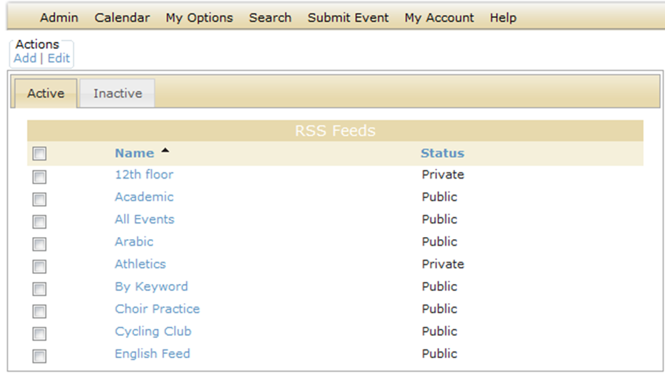
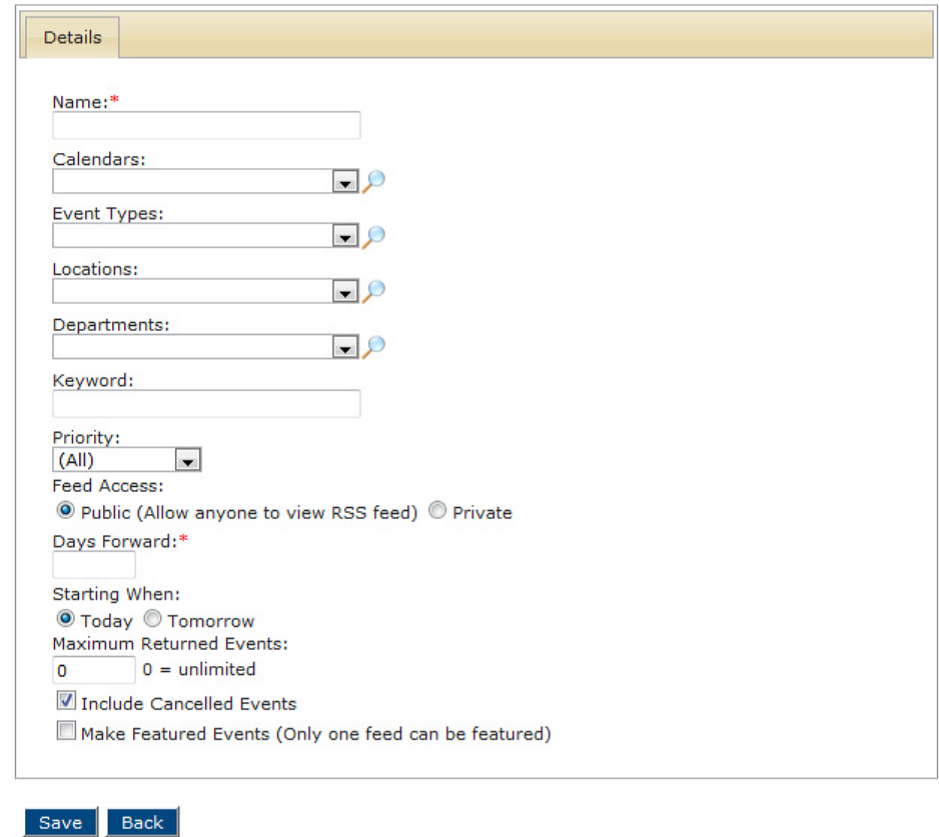
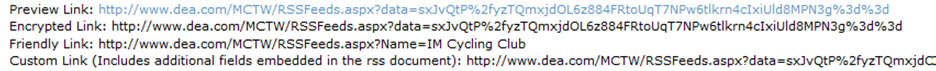
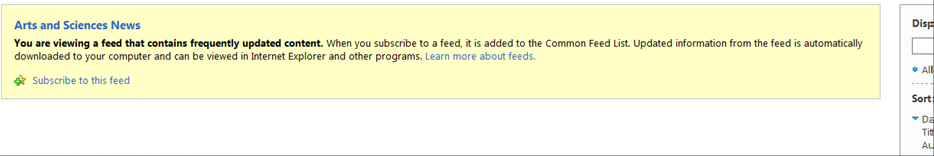
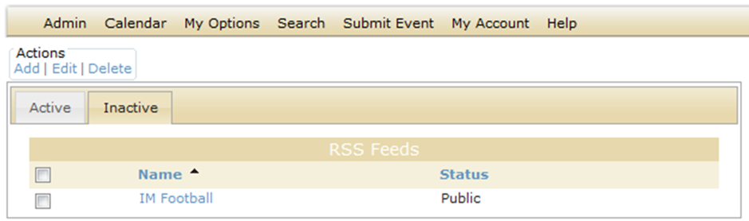
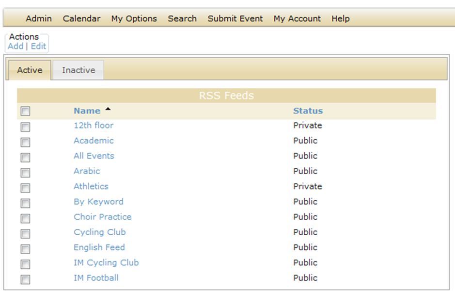
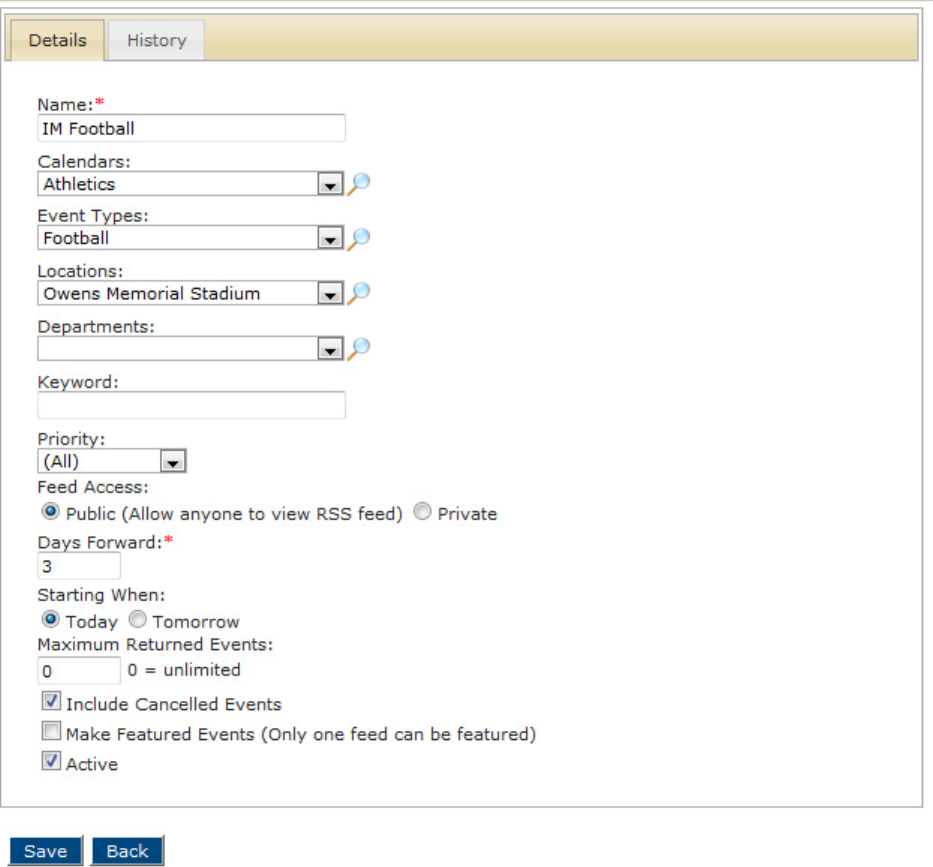
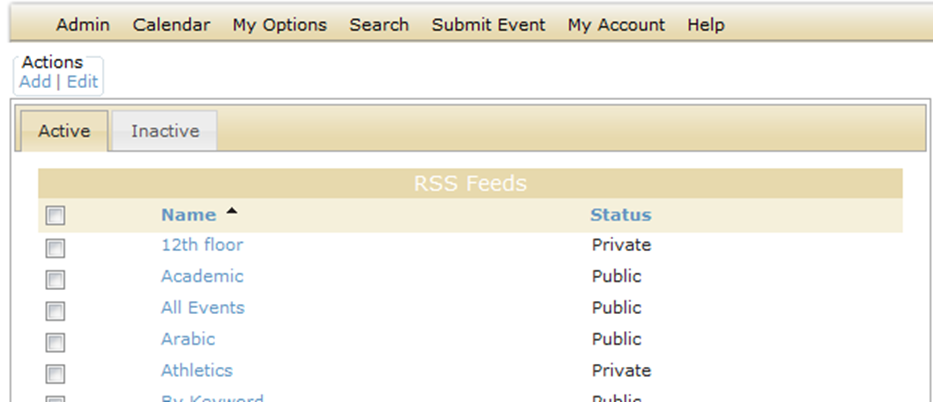
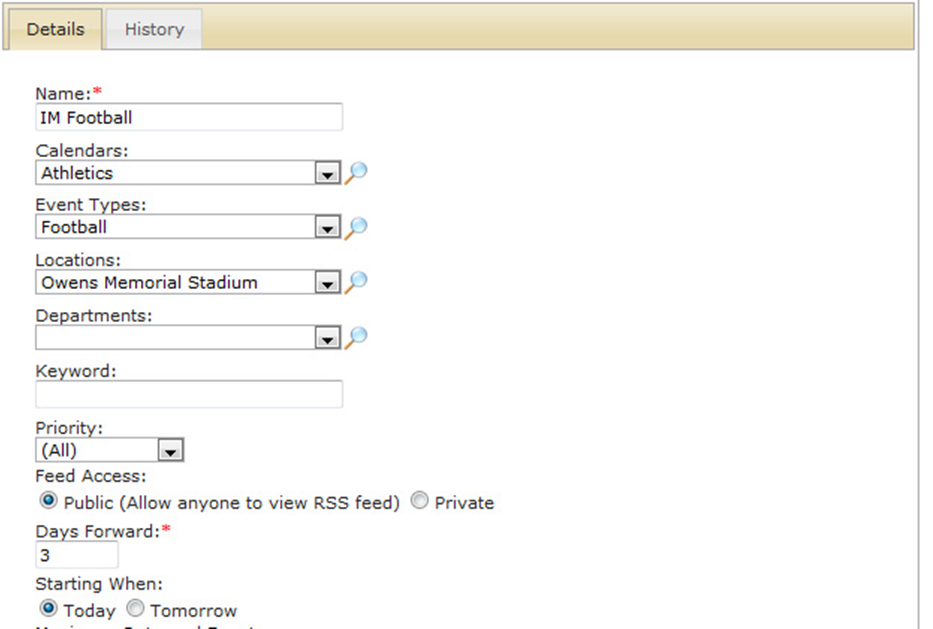
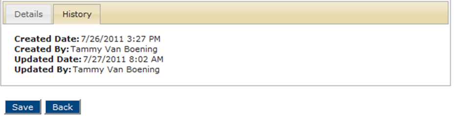

A Really Simple Syndication (RSS) feed can be used to provide convenient links to dynamic web content in your Master Calendar. A featured RSS feed is like a calendar URL. It can be featured across the top or bottom of your Master Calendar default page, and it can be static or dynamic. (See Setting the Default Page Layout). All other RSS feeds appear under the RSS link at the bottom of each page in Master Calendar. All public RSS feeds are always available from this link. Private RSS feeds are available to users only after they log in to Master Calendar. Managing RSS feeds consists of adding RSS feeds, activating and inactivating RSS feeds, editing RSS feeds, and deleting RSS feeds. You can also view the history for an RSS feed.
1. On the Admin menu, point to Site Administration > RSS Feeds. The RSS Feeds page opens on the Active tab, listing all currently active RSS feeds in Master Calendar.

2. Under Actions, click Add. The Details tab opens, where you can specify the information for the new RSS feed.

3. Enter the information for the RSS feed.
| Details tab, RSS feed | |
| Field | Description |
| Name | The name for the RSS fed. |
| Calendars | A list of all active calendars to which you have access as a Calendar Manager. Click the Lookup icon to open the Calendars dialog box and select the calendar or calendars from which the RSS feed is to pull information. |
| Event Types | A list of all active event types that are currently configured in Master Calendar. Click the Lookup icon to open the Event Types dialog box and select the event type or types that RSS feed should pull. |
| Locations | A list of all active event locations that are currently configured in Master Calendar. Click the Lookup icon to open the Locations dialog box and select one or more locations. The RSS feed will pull the events with these specific locations. |
| Departments | A list of all active departments that are currently configured in Master Calendar. Click the Lookup icon to open the Departments dialog box and select the department or departments to select the events with these specific departments that the RSS feed should pull. The RSS feed will pull the events with these specific departments. Note: Department is a default label. Depending on how your Master Calendar site administrator has configured Master Calendar, you might see this labeled as something else, such as “Business Units” for example. |
| Keyword | Enter a search string to further filter the events that are pulled by the RSS feed. Note: The search is limited to the exact order of the characters in the string; however, the search string is not case-sensitive and the search string can be found anywhere in the search results. For example, the search string “scout” returns holidays that contain either Scouting Day or Boy Scouts’ Day. |
| Priority | Indicate the priority of the events that the RSS feed should pull. The default value is All. You can change this to one of three values - High, Medium, or Low. |
| Feed Access | • Public - Anyone, not just users of Master Calendar, can view the feed. (Default value.) • Private - Only users of Master Calendar can view the feed. |
| Days Forward | The number of days going forward from the current day’s date that the RSS feed should pull information. |
| Starting When | • Today - Display only those events that start today (the current day’s date). • Tomorrow - Display only those events that start tomorrow (the day after the current day’s date). |
| Maximum Returned Events | The maximum number of events that the RSS feed should return. The default value is 0, which means that there is no limit to the maximum number of events returned. |
| Include Cancelled Events | The default value is Yes. To set to No, clear this selection. |
| Make Featured Feed | The default value is No. To set to Yes, select this option. Note: Remember, only one feed at a time can be the featured feed. If the RSS feed access is set to Private, a user cannot view the featured feed until after they log in to Master Calendar. If the RSS feed access is set to Public, anyone, guest or user, can view the featured feed. |
4. Click Save. An RSS Feed Saved message opens.
5. Click OK in the RSS Feed Saved message to save your RSS Feed. Three links are displayed at the bottom of the RSS Feed page.
• Preview Link—Click this link to preview the RSS feed link and determine if it is correct, or if you need to make changes.
• Encrypted Link—The actual physical URL to the RSS feed.
• Friendly Link—A shortened URL to the RSS feed to accommodate smaller viewing screens in smartness, and communication that is web-specific.
• Custom Link—Includes additional fields (Start Time, End Time, Location and IsAlldayEvent) that are embedded in the RSS document.
RSS Links

Previewing an RSS feed

1. On the Admin menu, point to Site Administration > RSS Feeds. The RSS Feeds page opens on the Active tab, listing all currently active RSS feeds in Master Calendar.
2. Click the Inactive tab to see all currently inactive RSS feeds in Master Calendar.

3. Select the RSS Feed you wish to activate
4. Under Actions, click Edit.
The Details tab opens. The Active option is not selected.
5. Select Active.
6. Click Save. An RSS Feed Saved message opens.
7. Click OK to save your RSS Feed.
8. Click Back to return to the RSS Feeds page. The RSS Feed is now displayed on this tab.

1. On the Admin menu, point to Site Administration > RSS Feeds. The RSS Feeds page opens on the Active tab, listing all currently active RSS feeds in Master Calendar.
2. Select the RSS Feed that you wish to de-activate.
3. Under Actions, click Edit. The Details tab opens. The Active option is selected.

4. Clear the Active option.
5. Click Save. An RSS Feed Saved message opens.
6. Click OK in the RSS Feed Saved message to save your RSS Feed.
7. Click Back to return to the RSS Feeds page. By default, the Active tab is the opened tab.
8. Click the Inactive tab to open it. The inactivated RSS Feed is displayed on this tab.
You can edit both active and inactive RSS feeds.
1. On the Admin menu, point to Site Administration > RSS Feeds. The RSS Feeds page opens on the Active tab, listing all currently active RSS feeds in Master Calendar.
2. If needed, click the Inactive tab to open it.
3. Select the RSS Feed that you are editing.
4. Under Actions, click Edit. The Details tab opens.
5. Edit any and all the information as needed for the feed..
| Details tab, RSS feed | |
| Field | Description |
| Name | The name for the RSS fed. |
| Calendars | A list of all active calendars to which you have access as a Calendar Manager. Click the Lookup icon to open the Calendars dialog box and select the calendar or calendars from which the RSS feed is to pull information. |
| Event Types | A list of all active event types that are currently configured in Master Calendar. Click the Lookup icon to open the Event Types dialog box and select the event type or types that RSS feed should pull. |
| Locations | A list of all active event locations that are currently configured in Master Calendar. Click the Lookup icon to open the Locations dialog box and select the location or locations to select the events with the specific locations that the RSS feed should pull. |
| Priority | Indicate the priority of the events that the RSS feed should pull. The default value is All. You can change this to one of three values - High, Medium, or Low. |
| Feed Access | • Public - Anyone, not just users of Master Calendar, can view the feed. (Default value.) • Private - Only users of Master Calendar can view the feed. |
| Days Forward | The number of days going forward from the current day’s date that the RSS feed should pull information. |
| Maximum Returned Events | The maximum number of events that the RSS feed should return. The default value is 0, which means that there is no limit to the maximum number of events returned. |
| Include Cancelled Events | The default value is Yes. To set to No, clear this selection. |
| Make Featured Feed | The default value is No. To set to Yes, select this option. Note: Remember, only one feed at a time can be the featured feed. If the RSS feed access is set to Private, a user cannot view the featured feed until after they log in to Master Calendar. If the RSS feed access is set to Public, anyone, guest or user, can view the featured feed. |
6. Clear the Active option.
7. Click Save. An RSS Feed Saved message opens.
8. Click OK in the RSS Feed Saved message to save your edited RSS Feed.
You can delete only inactive RSS feeds. To delete an active RSS feed, you must first inactivate it.
1. On the Admin menu, point to Site Administration, and then click RSS Feeds. The RSS Feeds page opens. By default, the Active tab is the opened tab. All currently active RSS feeds in Master Calendar are displayed on this tab.

2. Click the Inactive tab to open it. All currently inactive RSS feeds in Master Calendar are displayed on this tab.
3. Select the RSS feed that you are deleting. To select all RSS feeds on the currently opened page for deletion in a single step, select Name. If you have multiple pages of feeds to delete, you must repeat this entire process on each page.
4. Under Actions, click Delete. A message opens, asking you if you are sure that you want to delete all the selected RSS feeds.
5. Click OK in the message. A message opens indicating that all the selected RSS feeds were successfully deleted.
6. Click OK in the message. The Inactive tab is refreshed to show the remaining, if any, inactive RSS feeds in Master Calendar.
The history for an RSS feed consists of the original creation date of the feed, the name of the user who created the feed, and the last date that the feed was edited as well as the name of the user who last edited the feed. You can view the history for both active and inactive feeds.
1. On the Admin menu, point to Site Administration > RSS Feeds. The RSS Feeds page opens on the Active tab, listing all currently active RSS feeds in Master Calendar.
2. If needed, click the Inactive tab to open it.
3. Select the RSS Feed that for which you are viewing.
4. Under Actions, click Edit. The Details tab opens.

5. Click the History tab to open it and view the history for the selected feed. The tab also shows the three links for the RSS feed.

Page tags: article:topic